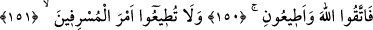

yerinden sarkmak, alçalmak ve inmek demektir.
el-Muhtâr’da der ki: “
” yemeğin hazmına, parçalanmasına yardımcı olan
şeylere denir. Çabuk hazmedilen yemek vardır, yavaş hazmedilen yemek vardır.
149. (Böyle sanıp) dağlardan ustaca evler yontuyorsunuz (oyup yapıyorsunuz).
“(Böyle sanıp) dağlardan” kendinize mesken olması için “ustaca evler
yontuyorsunuz (oyup yapıyorsunuz).” Taşları yontmada mahirsiniz. Nitekim Râğıb der
ki: “
” kökünden maharetle, demektir. Bu kelimenin asıl anlamı ise keyif/neşe
demektir. Çünkü hâzık/mâhir kimse keyifle ve gönül hoşluğu ile iş yapar.
Bu kelimeyi “
” diye okuyanlara göre mânâ, şımarık, küstah ve mağrur kimseler
olarak demektir.
Rivâyet edilir ki Hicr vâdisinde, taşlık olan vâdide yirmi bin yedi yüz ev yonttular.
Dağların arasında katı taştan evler yonttular. Âlemlerin Rabbi olan Allah onları o işte
usta ve sanatkâr olarak vasfetmiştir.
Bilesin ki bu âyetlerin zâhiri delâlet etmektedir ki, Hûd (a.s.)’ın kavmine hâkim olan;
hayâlî lezzetler, yâni büyüklenme ve ebedî olma, sivrilip başkalarından ayrılma ve
zorbalık arzusuydu. Sâlih (a.s.)’ın kavmine hâkim olan ise hissî lezzetler, yâni yeme-
içme, güzel evler ve konaklarda yaşama arzusuydu. Bütün bu lezzetler, gafil dünya
ehlinin lezzetlerindendir. Bunların üstünde ise müteyakkız/uyanık âhiret ehlinin
lezzetleri vardır. Bunlar ise ma’rifetler ve ilimler ile onlara erişmeyi sağlayan tevazu,
vakar, tecerrüd ve sabır/tahammül gibi kalbî lezzetlerdir.
150-151. Artık Allah’tan korkun ve bana itaat edin. O aşırıların emrine uymayın.
Zâhire göre ‘emrine’ kelimesini işe katmadan “
” O aşırılara/müsriflere
uymayın.’ buyrulması gerekirdi. Çünkü uymak/tâat/itâat âmire, imtisâl ise emre olur. Bu
iki fiil de emredilen şeyin varlığına götürmesi bakımından imtisâl, tâate/uymaya
benzetilmiştir. Müşebbehün bihin/kendisine benzetilenin, yâni tâatin/uymanın adı
geçmiş, fakat imtisal kasdedilmiştir. Yâni onların emrine imtisâl etmeyin, demektir.
152. Yeryüzünde bozgunculuk yapıp dirlik düzenlik vermeyenler(in sözüyle